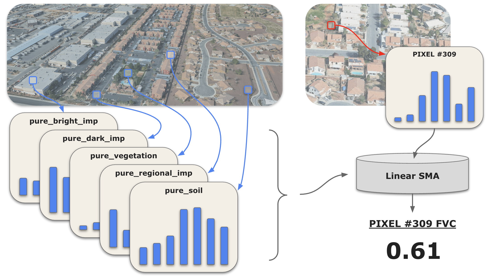

Project Summary
This project develops an interactive web application to assess green space loss and related environmental impacts in the Las Vegas Valley. In the context of recent tension around regional policy to remove “nonfunctional” turf, the application visualizes local changes in green space alongside shifts in land surface temperature and water consumption. A map-based dashboard enables tract-level exploration of spatial patterns and temporal change. By linking policy implementation to measurable landscape changes, the project directly supports more informed evaluation of its impact on water conservation and environmental conditions.
Problem Statement
The Colorado River Basin, a system providing water to millions across the southwestern US, is in crisis: runoff into the basin continues to decline while consumption levels remain constant. To reduce water consumption across the Las Vegas Valley, Assembly Bill 356 was passed in 2021, prohibiting the use of water from the basin to irrigate “nonfunctional” turf (green space with no clear purpose) by the start of 2027. In January 2026, a group of residents sued the Southern Nevada Water Authority (SNWA), claiming that the removal of these green spaces have led to negative downstream environmental effects. The consequences of the policy remain poorly documented, creating a gap between regulatory action and observable evidence.
End User
This dashboard is designed for Las Vegas Valley policymakers and residents, including those involved in ongoing litigation. Analysis has shown that turf irrigation in the region requires substantial amounts of water, especially when compared to more sustainable landscaping alternatives. But getting rid of the turf to reduce water consumption has considerable tradeoffs: academic research has demonstrated that removing nonfunctional turf leads to net local warming. Compiling turf loss with surface temperature and water consumption estimates allows residents and policymakers to view changes and patterns over time at a local level. The dashboard, thus, becomes a tool in which legal arguments can be grounded in measurable environmental evidence.
Data
| Category | Dataset | Description | Source |
|---|---|---|---|
| GEE | Sentinel-2 | Monthly median spectral band values from Copernicus Sentinel-2 MSI surface reflectance at 10m resolution, cloud-masked with gap-filling from prior months. | Link |
| Land Surface Temperature | Monthly median land surface temperature from Landsat 8 thermal infrared (Band 10) at 30m resolution, cloud-masked and converted to Celsius with gap-filling from prior months. | Link | |
| Evapotranspiration | Monthly actual evapotranspiration at 30m resolution from OpenET, combining six satellite-based models (DisALEXI, eeMETRIC, geeSEBAL, PT-JPL, SIMS, SSEBop) into a single ensemble estimate. | Link | |
| Census Tract Boundaries | Census tract boundaries for tracts within the Las Vegas Valley. | Link | |
| Other | Metro Area Boundary | Las Vegas Valley boundary compiled using Las Vegas - Henderson and Boulder City. | Link |
Methodology
Green Space Detection
An office park may cover a cluster of several Sentinel-2 pixels, a median strip may run a narrow trail through a few pixels, and a roundabout may cover just a small fraction of one pixel. To identify changes to turf of varying sizes, we estimate fractional vegetation cover (FVC) using a 5-endmember linear spectral mixture analysis (SMA) model. This model approximates the fractional coverage of each endmember within a pixel, and we then isolate the calculated vegetation percentages to arrive at our pixel-level FVC estimates.

FVC Estimation Code
// CONFIGURATION
var startYear = 2019;
var startMonth = 1;
var endYear = 2026;
var endMonth = 3;
var baselineYear = 2019;
var bands = ['B2', 'B3', 'B4', 'B8', 'B8A', 'B11', 'B12'];
// Reference image date range (for endmember extraction)
var refStartDate = ee.Date.fromYMD(2022, 6, 1);
var refEndDate = ee.Date.fromYMD(2022, 7, 1);
// LOAD BOUNDARY
var lv_metro_boundary = ee.FeatureCollection('projects/lv-turf-removal/assets/lv_metro_boundary');
// HELPER FUNCTIONS
/**
* Masks clouds, cirrus, and cloud shadows from Sentinel-2 imagery
* Uses QA60 band for clouds/cirrus and SCL band for cloud shadows
*/
function maskS2clouds(image) {
// QA60 band for clouds and cirrus
var qa = image.select('QA60');
var cloudBitMask = 1 << 10;
var cirrusBitMask = 1 << 11;
var qaMask = qa.bitwiseAnd(cloudBitMask).eq(0)
.and(qa.bitwiseAnd(cirrusBitMask).eq(0));
// SCL band for cloud shadows (and optionally other classes)
// SCL values: 3 = cloud shadow, 8 = cloud medium prob, 9 = cloud high prob, 10 = cirrus
var scl = image.select('SCL');
var sclMask = scl.neq(3) // cloud shadow
.and(scl.neq(8)) // cloud medium probability
.and(scl.neq(9)) // cloud high probability
.and(scl.neq(10)); // cirrus
// Combine both masks
var combinedMask = qaMask.and(sclMask);
return image.updateMask(combinedMask).divide(10000);
}
/**
* Gets median spectral profile for a geometry from the reference image
*/
var getProfile = function(geometry, refImg) {
var dict = refImg.reduceRegion({
reducer: ee.Reducer.median(),
geometry: geometry,
scale: 10,
maxPixels: 1e9
});
return bands.map(function(b) { return dict.get(b); });
};
/**
* Performs spectral unmixing and calculates RMSE
*/
function unmixWithRMSE(img, endmembers) {
var unmixed = img.unmix(endmembers, true, true)
.rename(['veg', 'npv', 'bimp', 'dimp', 'tcr']);
// RMSE calculation
var fractionArray = unmixed.toArray().toArray(1);
var endmemberArray = ee.Array(endmembers).transpose();
var reconstructedArray = ee.Image(endmemberArray).matrixMultiply(fractionArray);
var reconstructed = reconstructedArray
.arrayProject([0])
.arrayFlatten([bands]);
var error = img.subtract(reconstructed).pow(2);
var rmse = error.reduce(ee.Reducer.mean()).sqrt().rename('rmse');
return unmixed.addBands(rmse);
}
// CREATE MONTHLY COMPOSITES
var startDate = ee.Date.fromYMD(startYear, startMonth, 1);
var endDate = ee.Date.fromYMD(endYear, endMonth, 1);
var nMonths = endDate.difference(startDate, 'month').round();
// Create a fully masked placeholder image with correct band structure
var maskedPlaceholder = ee.Image.constant(ee.List.repeat(0, bands.length))
.rename(bands)
.updateMask(0)
.clip(lv_metro_boundary);
// Create raw monthly composites (may have gaps due to clouds)
var rawMonthlyComposites = ee.ImageCollection.fromImages(
ee.List.sequence(0, nMonths).map(function(n) {
var currentStart = startDate.advance(n, 'month');
var currentEnd = currentStart.advance(1, 'month');
var collection = ee.ImageCollection("COPERNICUS/S2_SR_HARMONIZED")
.filterBounds(lv_metro_boundary)
.filterDate(currentStart, currentEnd)
.filter(ee.Filter.lt('CLOUDY_PIXEL_PERCENTAGE', 20))
.map(maskS2clouds);
// Check if collection has any images
var hasImages = collection.size().gt(0);
// Use median composite if images exist, otherwise use masked placeholder
var composite = ee.Image(ee.Algorithms.If(
hasImages,
collection.median().select(bands).clip(lv_metro_boundary),
maskedPlaceholder
));
return composite.set({
'month': currentStart.get('month'),
'year': currentStart.get('year'),
'system:time_start': currentStart.millis()
});
})
);
// GAP-FILL MISSING MONTHS (carry forward values from previous month)
var compositeList = rawMonthlyComposites.toList(rawMonthlyComposites.size());
var filledList = ee.List(
ee.List.sequence(0, nMonths).iterate(function(n, acc) {
n = ee.Number(n);
acc = ee.List(acc);
var current = ee.Image(compositeList.get(n));
// Check if current image has ANY valid pixels
var validPixelCount = current.select(0).reduceRegion({
reducer: ee.Reducer.count(),
geometry: lv_metro_boundary,
scale: 1000, // Coarse scale for efficiency
maxPixels: 1e6
}).get(bands[0]);
var hasValidPixels = ee.Number(validPixelCount).gt(0);
var filled = ee.Algorithms.If(
n.gt(0),
ee.Algorithms.If(
hasValidPixels,
// Current has some valid pixels: fill any remaining gaps with previous
current.unmask(ee.Image(acc.get(n.subtract(1)))),
// Current is entirely empty: use previous month entirely
ee.Image(acc.get(n.subtract(1)))
),
current
);
return acc.add(ee.Image(filled));
}, ee.List([]))
);
// Reconstruct ImageCollection with preserved metadata
var monthlyComposites = ee.ImageCollection.fromImages(
ee.List.sequence(0, nMonths).map(function(n) {
var filledImg = ee.Image(filledList.get(n));
var originalImg = ee.Image(compositeList.get(n));
return filledImg.copyProperties(originalImg, ['month', 'year', 'system:time_start']);
})
);
// CREATE REFERENCE IMAGE AND ENDMEMBERS
var referenceImg = ee.ImageCollection("COPERNICUS/S2_SR_HARMONIZED")
.filterBounds(lv_metro_boundary)
.filterDate(refStartDate, refEndDate)
.filter(ee.Filter.lt('CLOUDY_PIXEL_PERCENTAGE', 20))
.map(maskS2clouds)
.median()
.select(bands)
.clip(lv_metro_boundary);
// em1_veg, em2_npv, etc.
var endmembers = [
getProfile(em1_veg, referenceImg),
getProfile(em2_npv, referenceImg),
getProfile(em3_bimp, referenceImg),
getProfile(em4_dimp, referenceImg),
getProfile(em5_tcr, referenceImg)
];
// SPECTRAL UNMIXING WITH RMSE
var unmixedCollection = monthlyComposites.map(function(img) {
return unmixWithRMSE(img, endmembers)
.copyProperties(img, ['system:time_start', 'month', 'year']);
});
// CALCULATE VEGETATION DIFFERENCE FROM BASELINE
var baselineCollection = unmixedCollection.filter(ee.Filter.eq('year', baselineYear));
var monthJoin = ee.Join.saveFirst({ matchKey: 'baseline_img' });
var filterByMonth = ee.Filter.equals({ leftField: 'month', rightField: 'month' });
var joinedCollection = ee.ImageCollection(
monthJoin.apply(unmixedCollection, baselineCollection, filterByMonth)
);
var diffCollection = joinedCollection.map(function(img) {
var currentImg = ee.Image(img);
var baselineImg = ee.Image(currentImg.get('baseline_img'));
var currentVeg = currentImg.select('veg');
var baselineVeg = baselineImg.select('veg');
var diff = currentVeg.subtract(baselineVeg).rename('veg_diff');
return currentImg.addBands(diff);
});
// COMPUTE MONTHLY AVERAGE RMSE
var monthNames = ['Jan', 'Feb', 'Mar', 'Apr', 'May', 'Jun', 'Jul', 'Aug', 'Sep', 'Oct', 'Nov', 'Dec'];
// Calculate mean RMSE for each calendar month (1-12) across all years
var monthlyRMSEValues = ee.List.sequence(1, 12).map(function(month) {
var monthImages = unmixedCollection.filter(ee.Filter.eq('month', month));
var meanRMSE = monthImages.select('rmse').mean();
return meanRMSE.reduceRegion({
reducer: ee.Reducer.mean(),
geometry: lv_metro_boundary,
scale: 100,
maxPixels: 1e9
}).get('rmse');
});
// Create ordered dictionary (Jan -> Dec)
var monthlyRMSEDict = ee.Dictionary.fromLists(monthNames, monthlyRMSEValues);
print('Monthly RMSE:');
print(monthlyRMSEDict);
// Calculate total (overall) RMSE across all images
var totalRMSE = unmixedCollection.select('rmse').mean().reduceRegion({
reducer: ee.Reducer.mean(),
geometry: lv_metro_boundary,
scale: 100,
maxPixels: 1e9
});
print('Total RMSE:');
print(totalRMSE.get('rmse'));Water Consumption
In arid regions like Las Vegas, evapotranspiration (ET) serves as a strong proxy for water consumption: with minimal rainfall, almost all ET is the result of irrigation. ET is modeled by combining satellite-derived land surface temperature and vegetation indices with meteorological variables such as wind speed, humidity, and solar radiation. The resulting value measures the total flux of water from the land surface to the atmosphere through both soil evaporation and plant transpiration.
Seasonal Analysis
All of our variables contain an element of seasonality. We observe, for example, that green space shrinks in winter months, while temperatures climb in summer months. When we see that a neighborhood has lost green space from June to December, has this green space actually been removed? Or is this just typical seasonal fluctuation? To try to better separate routine seasonality from the true signal of interest, we compare each month in 2020-2025 to the same month from 2019. The resulting comparison data filters out some sense of seasonal fluctuation and enables users to more easily compare changes across any timeframe.
Interface
This application offers an interactive interface for exploring spatial patterns, temporal change, and tract-level differences through comparative visualisations, statistical summaries, and local insights. The map-based dashboard design and flexible selection controls aims to support clear navigation, easy comparison, and informed interpretation. More details can be found in the panels under About and How to use.
The Application
How it Works
Data Preparation and Precomputation
To keep the interface fast and interactive, monthly image collections are pre-computed and summarised within the metro boundaries, making it easier to compare changes across time periods and against a 2019 baseline.
Pre-processing Study Area and Tract Boundaries
The study area boundary is compiled from a TIGER shapefile combining the Las Vegas–Henderson and Boulder City urban areas, uploaded as a Google Earth Engine FeatureCollection asset. Census tract geometries are sourced from the TIGER 2020 census tracts GEE FeatureCollection, clipped and filtered to only retain tracts falling within the study area boundary. The resulting tracts are then simplified to reduce vertex count and exported as a separate pre-processed asset, ensuring the boundary overlay renders quickly without repeated server-side geometry operations at runtime. All raster layers are also pre-clipped to the study area during the asset-creation stage.
Precomputed Layers
- Vegetation: monthly vegetation is shown as fractional vegetation cover (FVC), along with vegetation change layers relative to the same month in 2019.
- Surface Temperature: monthly land surface temperature is shown alongside temperature change layers relative to the same month in 2019.
- Water Consumption: monthly water consumption is estimated from evapotranspiration, with change layers also shown relative to the same month in 2019.
Tract-Level Aggregation
Each layer is aggregated to both the study area and census tract level. When a tract is selected, the app calculates summary statistics for the chosen place and time period. These outputs are then used to generate key metrics, histograms, and monthly trend charts, supporting both single-tract analysis and two-tract comparison.
Interactive Visualisation and Analysis
Temporal Split-Panel
To visually assess environmental shifts between any 2 selected months, the application features a synchronized split-screen map with a draggable divider for “start month” and “end month” comparisons
ui.root.clear();
var leftMap = ui.Map(); var rightMap = ui.Map();
[leftMap, rightMap].forEach(function(m) { m.setControlVisibility({
all: false, zoomControl: true,
scaleControl: true,
mapTypeControl: true});
m.setOptions('Custom', {Custom: [{stylers: [{saturation: -75}]},
{featureType: 'poi', stylers: [{visibility: 'off'}]},
{featureType: 'transit', stylers: [{visibility: 'off'}]}]}); });
var mapLinker = ui.Map.Linker([leftMap, rightMap]);
// PERFORMANCE: Add boundary overlay once as a permanent layer on each map.
// These layers are NEVER removed — refreshMap only swaps the data layer below them.
// This eliminates ~18s of redundant Collection.style + asset loading per refresh.
leftMap.addLayer(combinedVectorOverlay, {}, 'Boundaries');
rightMap.addLayer(combinedVectorOverlay, {}, 'Boundaries');
var leftDateLabel = ui.Label('Jun 2020',
{fontSize: '15px',
fontWeight: 'bold',
backgroundColor: 'rgba(255,255,255,0.95)',
padding: '6px 14px',
position: 'top-left',
border: '1px solid rgba(0,0,0,0.12)'});
var rightDateLabel = ui.Label('Jun 2023',
{fontSize: '15px',
fontWeight: 'bold',
backgroundColor: 'rgba(255,255,255,0.95)',
padding: '6px 14px',
position: 'top-right',
border: '1px solid rgba(0,0,0,0.12)'});
leftMap.add(leftDateLabel); rightMap.add(rightDateLabel);
var splitPanel = ui.SplitPanel({
firstPanel: leftMap,
secondPanel: rightMap,
orientation: 'horizontal',
wipe: true,
style: {stretch: 'both'}});
var mapContainer = ui.Panel([splitPanel], null, {stretch: 'both', backgroundColor: '#' + COLORS.white});Interactive Tract Profiling
Using the “Tract Profile” view, users can click any single tract to instantly generate a local profile. This triggers the UI to populate statistical cards (e.g. green space changes, surface temperature changes, water consumption changes) and dynamic distribution histograms, which calculate based on the selected time ranges.
function handleMapClick(coords) {
if (state.currentView === 'about') return;
var point = ee.Geometry.Point(coords.lon, coords.lat); var clicked = tracts.filterBounds(point).first();
clicked.evaluate(function(f) { if (!f) return; var tract = ee.Feature(f); if (state.currentView === 'explore') updateSidePanel(tract); else if (state.currentView === 'compare') handleCompareClick(tract); });
}
leftMap.onClick(handleMapClick); rightMap.onClick(handleMapClick);Comparative Analysis
Under the “Compare Tracts” tab, users can evaluate spatial disparities by selecting any two distinct tracts directly on the map. The application dynamically builds side-by-side statistical cards and overlays the monthly metrics of both tracts onto synchronized line charts, which allows for a direct visual comparison of their environmental trends
// FVC turf loss charts
var fvcChart = ui.Chart.feature.byFeature({
features: table, xProperty: 'date', yProperties: ['FVC_A', 'FVC_B']
}).setChartType('LineChart').setOptions({
title: 'Monthly Greenness Trend\nTract ' + geoidA + ' vs Tract ' + geoidB,
hAxis: {title: 'Month', slantedText: true, slantedTextAngle: 45, textStyle: {fontSize: 8}},
vAxis: {title: 'Mean FVC', viewWindow: {min: 0, max: 0.3}},
legend: {position: 'top'}, lineWidth: 3, pointSize: 0, interpolateNulls: true,
series: {0: {color: colorA, labelInLegend: 'Tract ' + geoidA}, 1: {color: colorB, labelInLegend: 'Tract ' + geoidB}},
chartArea: {left: 60, top: 45, width: '76%', height: '56%'}, fontSize: 11});
// LST temperature charts
var lstChart = ui.Chart.feature.byFeature({
features: table, xProperty: 'date', yProperties: ['LST_A', 'LST_B']
}).setChartType('LineChart').setOptions({
title: 'Monthly Land Surface Temperature\nTract ' + geoidA + ' vs Tract ' + geoidB,
hAxis: {title: 'Month', slantedText: true, slantedTextAngle: 45, textStyle: {fontSize: 8}},
vAxis: {title: 'LST Celsius', viewWindow: {min: 15, max: 70}},
legend: {position: 'top'}, lineWidth: 3, pointSize: 0, interpolateNulls: true,
series: {0: {color: colorA, labelInLegend: 'Tract ' + geoidA}, 1: {color: colorB, labelInLegend: 'Tract ' + geoidB}},
chartArea: {left: 60, top: 45, width: '76%', height: '56%'}, fontSize: 11});
// Water consumption charts
var etCompareChart = ui.Chart.feature.byFeature({
features: table, xProperty: 'date', yProperties: ['ET_A', 'ET_B']
}).setChartType('LineChart').setOptions({
title: 'Monthly Water Consumption\nTract ' + geoidA + ' vs Tract ' + geoidB,
hAxis: {title: 'Month', slantedText: true, slantedTextAngle: 45, textStyle: {fontSize: 8}},
vAxis: {title: 'Mean water consumption (mm)', viewWindow: {min: 0, max: 200}},
legend: {position: 'top'}, lineWidth: 3, pointSize: 0, interpolateNulls: true,
series: {0: {color: colorA, labelInLegend: 'Tract ' + geoidA}, 1: {color: colorB, labelInLegend: 'Tract ' + geoidB}},
chartArea: {left: 60, top: 45, width: '76%', height: '56%'}, fontSize: 11});Baseline Mode
To make the analysis more robust, we account for natural weather fluctuations. Specifically, users can toggle “Seasonally adjusted data” from “Actual data”. This application then instantly switches the map and charts from raw data to data relative to the same month in 2019.
function refreshMap() {
var isSameDate = (state.fromYear === state.toYear && state.fromMonth === state.toMonth);
var isBaseline = (state.dataType === 'adjusted');
splitCheck.style().set('shown', !isSameDate || isBaseline);
var actuallySplit = state.splitEnabled && (!isSameDate || isBaseline);
var fromStr = MONTHS[state.fromMonth - 1] + ' ' + state.fromYear; var toStr = MONTHS[state.toMonth - 1] + ' ' + state.toYear;
if (isBaseline) {
if (actuallySplit) {
leftDateLabel.setValue(fromStr + ' (vs 2019)');
rightDateLabel.setValue(toStr + ' (vs 2019)');
} else {
leftDateLabel.setValue(isSameDate ? fromStr + ' vs 2019' : fromStr + ' → ' + toStr + ' (vs 2019)');
rightDateLabel.setValue(toStr);
}
} else {
leftDateLabel.setValue(isSameDate || actuallySplit ? fromStr : fromStr + ' → ' + toStr);
rightDateLabel.setValue(toStr);
}
_clearDataLayers(leftMap); _clearDataLayers(rightMap);
if (actuallySplit) {
if (containerMode !== 'split') {
var savedView = {lon: currentViewPort.lon, lat: currentViewPort.lat, zoom: currentViewPort.zoom};
mapContainer.widgets().reset([splitPanel]);
containerMode = 'split';
if (mapInitialized) {
ee.Number(0).evaluate(function() {
leftMap.setCenter(savedView.lon, savedView.lat, savedView.zoom);
rightMap.setCenter(savedView.lon, savedView.lat, savedView.zoom);
});
}
}
rightDateLabel.style().set('shown', true);
if (isBaseline) {
if (state.activeLayer === 'greenspace') { _addData(leftMap, getVegDiffImage(state.fromYear, state.fromMonth), fvc_diff_vis, 'FVC Anomaly (From)'); _addData(rightMap, getVegDiffImage(state.toYear, state.toMonth), fvc_diff_vis, 'FVC Anomaly (To)'); }
else if (state.activeLayer === 'temperature') { _addData(leftMap, getLSTDiffImage(state.fromYear, state.fromMonth), lst_diff_vis, 'LST Anomaly (From)'); _addData(rightMap, getLSTDiffImage(state.toYear, state.toMonth), lst_diff_vis, 'LST Anomaly (To)'); }
else if (state.activeLayer === 'water') { _addData(leftMap, getETDiffImage(state.fromYear, state.fromMonth), et_diff_vis, 'Water Anomaly (From)'); _addData(rightMap, getETDiffImage(state.toYear, state.toMonth), et_diff_vis, 'Water Anomaly (To)'); }
else { _addData(leftMap, getS2Composite(state.fromYear, state.fromMonth), s2_vis, 'S2 Before'); _addData(rightMap, getS2Composite(state.toYear, state.toMonth), s2_vis, 'S2 After'); }
} else {
if (state.activeLayer === 'greenspace') { _addData(leftMap, getFVCImage(state.fromYear, state.fromMonth), fvc_vis, 'FVC Before'); _addData(rightMap, getFVCImage(state.toYear, state.toMonth), fvc_vis, 'FVC After'); }
else if (state.activeLayer === 'temperature') { _addData(leftMap, getLSTImage(state.fromYear, state.fromMonth), lst_vis, 'LST Before'); _addData(rightMap, getLSTImage(state.toYear, state.toMonth), lst_vis, 'LST After'); }
else if (state.activeLayer === 'water') { _addData(leftMap, getETImage(state.fromYear, state.fromMonth), et_vis, 'Water Before'); _addData(rightMap, getETImage(state.toYear, state.toMonth), et_vis, 'Water After'); }
else { _addData(leftMap, getS2Composite(state.fromYear, state.fromMonth), s2_vis, 'S2 Before'); _addData(rightMap, getS2Composite(state.toYear, state.toMonth), s2_vis, 'S2 After'); }
}
} else {
if (containerMode !== 'single') {
var savedView = {lon: currentViewPort.lon, lat: currentViewPort.lat, zoom: currentViewPort.zoom};
mapContainer.widgets().reset([leftMap]);
containerMode = 'single';
if (mapInitialized) {
ee.Number(0).evaluate(function() {
leftMap.setCenter(savedView.lon, savedView.lat, savedView.zoom);
});
}
}
rightDateLabel.style().set('shown', false);
if (isSameDate && !isBaseline) {
if (state.activeLayer === 'greenspace') _addData(leftMap, getFVCImage(state.fromYear, state.fromMonth), fvc_vis, 'FVC');
else if (state.activeLayer === 'temperature') _addData(leftMap, getLSTImage(state.fromYear, state.fromMonth), lst_vis, 'LST');
else if (state.activeLayer === 'water') _addData(leftMap, getETImage(state.fromYear, state.fromMonth), et_vis, 'Water');
else _addData(leftMap, getS2Composite(state.fromYear, state.fromMonth), s2_vis, 'Satellite');
} else {
if (state.activeLayer === 'greenspace') {
var fvcDiff = isBaseline ? getVegDiffImage(state.toYear, state.toMonth) : getFVCImage(state.toYear, state.toMonth).subtract(getFVCImage(state.fromYear, state.fromMonth));
_addData(leftMap, fvcDiff, fvc_diff_vis, 'FVC change');
} else if (state.activeLayer === 'temperature') {
var lstDiff = isBaseline ? getLSTDiffImage(state.toYear, state.toMonth) : getLSTImage(state.toYear, state.toMonth).subtract(getLSTImage(state.fromYear, state.fromMonth));
_addData(leftMap, lstDiff, lst_diff_vis, 'LST change');
} else if (state.activeLayer === 'water') {
var etDiff = isBaseline ? getETDiffImage(state.toYear, state.toMonth) : getETImage(state.toYear, state.toMonth).subtract(getETImage(state.fromYear, state.fromMonth));
_addData(leftMap, etDiff, et_diff_vis, 'Water change');
} else { _addData(leftMap, getS2Composite(state.toYear, state.toMonth), s2_vis, 'Current view'); }
}
}
state.compareTracts.forEach(function(t) { var compStyle = ee.FeatureCollection([ee.Feature(t.feature.geometry())]).style({color: t.color, fillColor: t.color + '40', width: 3}); leftMap.addLayer(compStyle, {}, 'Compare tract: ' + t.geoid); if (state.splitEnabled) rightMap.addLayer(compStyle, {}, 'Compare tract: ' + t.geoid); });
if (state.selectedTract) { var highlightStyle = ee.FeatureCollection([ee.Feature(state.selectedTract.geometry())]).style({color: COLORS.primary, fillColor: COLORS.primary + '30', width: 2}); leftMap.addLayer(highlightStyle, {}, 'Selected tract'); if (state.splitEnabled) rightMap.addLayer(highlightStyle, {}, 'Selected tract'); }
updateLegendVisibility(); if (!mapInitialized) { leftMap.centerObject(roi, 11); mapInitialized = true; }
}Appendix
Limitations
Against this background, the present project seeks to identify where non-functional turf appears to have been removed across the Las Vegas Valley and whether those locations also show local increases in land surface temperature. However, the dashboard is designed as an exploratory spatial evidence tool rather than a causal model. While it can help users identify where turf loss and higher land surface temperature appear together, it cannot, on its own, confirm that turf removal directly caused local warming, since other factors such as surface materials, urban form, and seasonal variation may also influence observed temperature patterns.
SMA Model Coverage
The SMA model was selected based on similar research from early SMA models and our region of interest. Visual analysis reveals that the SMA model successfully identifies green space locations and changes over time. To assess the completeness of our SMA model more technically, we measure the root mean squared error (spectral RMSE) between every pixel’s true band distribution and SMA-constructed band distribution.
\[ RMSE = \sqrt{\frac{1}{7}\sum_{b=1}^{7}\left(\rho_{b}-\sum_{k=1}^{5}f_{k}\cdot e_{kb}\right)^{2}} \]
where, \(e_{kb}\) is the reflectance of endmember \(k\) in band \(b\), and, for a given pixel, \(\rho_{b}\) is the observed reflectance in spectral band \(b\), and \(f_{k}\) is the estimated fraction of endmember \(k\) in the pixel.
Across all months, the SMA model achieves a spectral RMSE of 0.011 for our reflectance values which have been scaled between 0 and 1. Past research has established a spectral RMSE threshold of 0.025 for acceptable SMA model coverage (Roberts et al. 1998), indicating that, even for a SMA model like ours with more endmembers, the model captures the spectral dimensionality of our area well.
There still remains future potential for improvement with the model. Aggregated monthly RMSEs do reveal slight seasonal changes in accuracy (with winter months achieving a lower RMSE), and visual analysis indicates that errors are higher for bright impervious materials such as the white roofs of large corporate or government buildings.
References
Las Vegas Review-Journal (2026) High court paves way for more parties to challenge ‘nonfunctional grass’ irrigation ban. Available at: https://www.reviewjournal.com/news/civil-courts/high-court-paves-way-for-more-parties-to-challenge-nonfunctional-grass-irrigation-ban-3790366/ (Accessed: 23 April 2026).
Mejía Valencia, J.F. et al. (2023) The effect of removal of all non-functional turf in Las Vegas: tradeoffs between water conservation, excessive heat and storminess. Available at: https://www.researchgate.net/publication/370171341_The_effect_of_removal_of_all_non-functional_turf_in_Las_Vegas_tradeoffs_between_water_conservation_excessive_heat_and_storminess (Accessed: 23 April 2026).
Nevada Legislature / LegiScan (2021) Nevada Assembly Bill 356 (81st Legislature): Makes various changes relating to the conservation of water. Available at: https://legiscan.com/NV/bill/AB356/2021 (Accessed: 23 April 2026).
News 3 Las Vegas (2026) Case No. A-26-937025-C Department 11 [PDF court complaint]. Available at: https://news3lv.com/resources/pdf/ea5538b8-1ef6-4872-8e0d-fc450e051355-A26937025CComplaintCOMPCIV.pdf (Accessed: 23 April 2026).
Saher, N., Mubeen, M., Iqbal, A., Andlib, Z., Ahmad, A., Hussain, A., Bukhari, S.S.H., Adnan, M. and Hammad, H.M. (2018) ‘Trend analysis of Las Vegas land cover and temperature using remote sensing’, Land, 7(4), p. 135. Available at: https://www.mdpi.com/2073-445X/7/4/135 (Accessed: 23 April 2026).
Schmidt, J.C., Yackulic, C.B. and Kuhn, E. (2023) ‘The Colorado River water crisis: Its origin and the future’, WIREs Water, 10(6), e1672. Available at: https://wires.onlinelibrary.wiley.com/doi/10.1002/wat2.1672 (Accessed: 23 April 2026).
Southern Nevada Water Authority (2000) Xeriscape Conversion Study. Available at: https://www.snwa.com/assets/pdf/reports-xeriscape.pdf (Accessed: 23 April 2026).
Southern Nevada Water Authority (2026) SNWA Water Resource Plan: 2026 Appendices. Available at: https://www.snwa.com/assets/pdf/water-resource-plan-appendices-2026.pdf (Accessed: 23 April 2026).
Wu, C. and Murray, A.T. (2003) ‘Estimating impervious surface distribution by spectral mixture analysis’, Remote Sensing of Environment, 84(4), pp. 493–505. Available at: https://www.sciencedirect.com/science/article/pii/S0034425702001360 (Accessed: 23 April 2026).